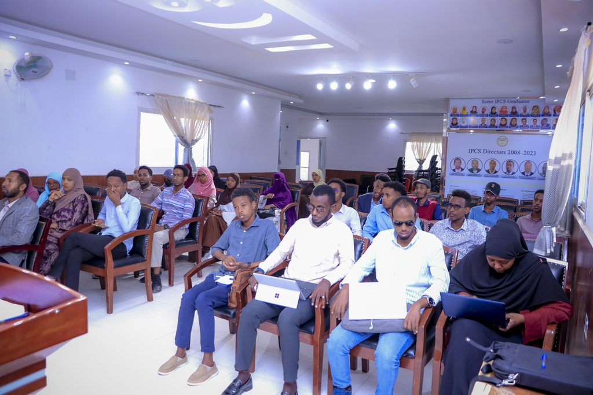

Constituent College
Apply for Admission
College of Engineering, Computing and Information Technology
Established to meet the urgent national demand for infrastructure architects, software engineers, and telecommunication experts. The college features state-of-the-art computer labs, networking apparatus, and structural testing facilities.
Academic Departments and Degrees: